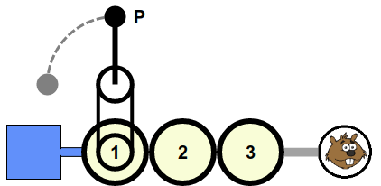
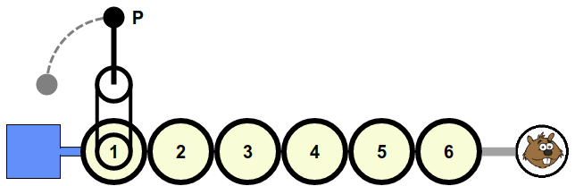
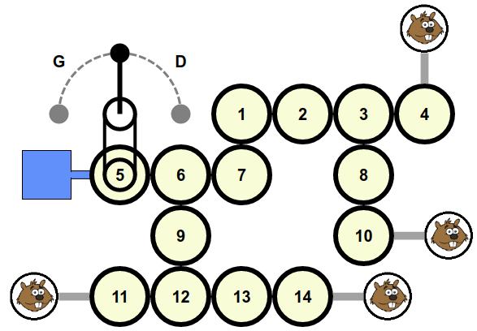

Solution
Voici une liste d'actions permettant de résoudre le défi :
2 P 2 P 3 P 3
2 P 2 P 3 P 3 P 4 P 4 P 6 P 6
7 G 7 G 2 D 2 D 10 G 10 G 9 D 9 G 12 D 12 G 14 D 14



Dans la liste d'actions, un nombre indique qu'il faut cliquer sur la roue correspondante, selon la numérotation montrée dans le dessin ci-dessus.
La lettre P indique qu'il faut cliquer sur la poignée.
La lettre G indique qu'il faut cliquer sur la poignée de gauche, et la lettre D indique qu'il faut cliquer sur la poignée de droite.
Il y a de nombreuses manières de s'y prendre pour résoudre ce défi. Nous décrivons ci-dessous la méthode qui est sans doute la plus simple.
Tout au début, on clique sur la poignée pour bien orienter le tuyau sur la roue accrochée à la poignée. Ensuite, on va corriger l'orientation des tuyaux les uns après les autres, en commençant par ceux qui sont le plus proche de la source, de sorte à ce que l'eau puisse couler dans de plus en plus de roues.
On regarde la première roue dans laquelle l'eau ne circule pas, et on va effectuer une manipulation permettant d'orienter cette roue là comme il faut, sans modifier l'orientation des roues dans lesquelles l'eau coule déjà.
Pour cela, on clique sur la poignée du bon côté pour orienter cette roue comme on souhaiterait qu'elle soit. Ensuite, on déconnecte la roue en cliquant dessus. On clique à nouveau sur la poignée,cette fois de l'autre côté, pour défaire les rotations que l'on a effectuée juste avant. Puis on reconnecte la roue en cliquant à nouveau dessus. L'eau coule désormais à travers.
On continue ainsi de proche en proche, jusqu'à ce que toutes les roues soient bien orientées.
C'est de l'informatique !
La version quatre étoiles de ce sujet nous faisait manipuler une structure que l'on appelle un arbre enraciné, en informatique. Le réservoir est la racine de l'arbre, les roues sont les noeuds intermédiaires, et les Castors sont les feuilles. Les versions deux et trois étoiles sont aussi des arbres, mais très simples, avec une seule feuille.
Il fallait trouver ici une manière de s'organiser pour placer toutes les roues aux bonnes positions les unes par rapport aux autres. S'organiser, cela revient à appliquer un algorithme. L'algorithme présenté en solution est un parcours en profondeur de l'arbre, où l'on part de la racine, et va vers chacune des feuilles en suivant les branches étape par étape.
Lors du parcours de cet arbre, on appliquait un algorithme dit glouton. À chaque étape du parcours, on faisait en sorte que la roue parcourue soit bien placée par rapport aux roues déjà traitées. Pour la version difficile, une petite amélioration de cet algorithme glouton permet d'obtenir le nombre de déconnexions minimal possible.